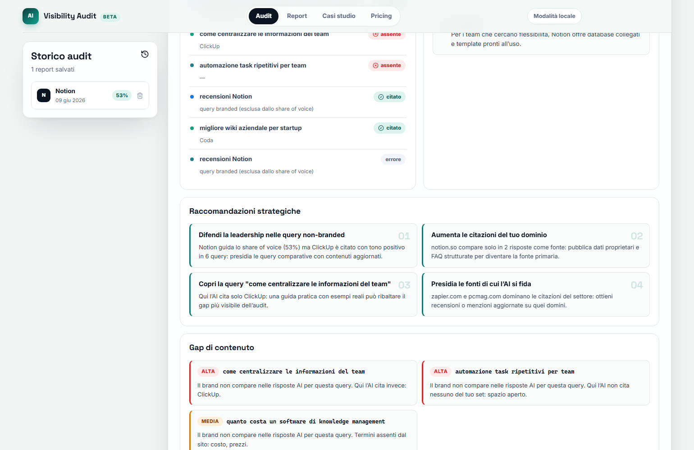

Generative Engine Optimization (GEO) · AEO · Real-Brand Showcase
Measure how AI engines recommend your brand — without single-prompt guesswork.
Public case-study and methodology showcase for AI Visibility Audit (commercial app source maintained privately). Explore a live multi-engine Notion audit and a live-verified 5-brand AI crawler benchmark below.
AI Crawler Governance
Audit robots.txt, sitemaps, and server logs across 19 AI bots to separate live AI search bots from training scrapers.
Multi-Engine Stability
Run unbranded buyer queries across Gemini, GPT, Perplexity & Claude (2–3× repeat runs) to measure true Share of Voice.
Source Gap & 4-Week Plan
Map which 3rd-party domains (Zapier, PCMag, G2) actually feed AI answers and execute targeted content + Digital PR.
1. Live Multi-Engine Case Study: Notion (Italy Market)
Real unbranded benchmark across Google Gemini, OpenAI GPT, and Perplexity comparing Notion vs. ClickUp, Airtable, and Coda (branded queries explicitly excluded from Share of Voice). Switch tabs to inspect the visual charts, content gaps, or live app screenshots:
Why Checking 1 AI Engine Lies (Engine Split)
Key insight: A team monitoring only Gemini would assume 80% dominance — missing that Perplexity drops to 33% on unbranded queries.
Unbranded Share of Voice vs. Competitors
Key insight: Notion leads overall, but ClickUp captures over half of the remaining discovery demand.
Source Gap: Who AI Engines Actually Cite
Key insight: AI engines pull consensus mostly from 3rd-party comparisons — Digital PR on Zapier, G2 & Capterra.it moves the needle faster than blog volume alone.
“come centralizzare le informazioni del team”
Current result: Notion absent; ClickUp cited alone.
Action: Publish an Italian answer-first team-wiki playbook with templates & structured comparison tables.
“automazione task ripetitivi per team”
Current result: Zero of the 4 benchmarked brands cited.
Action: First-mover workflow automation guide targeting Italian team operations.
“quanto costa un software di knowledge management”
Current result: Notion absent because pricing terms are missing from retrieved snippets.
Action: Build transparent Italian pricing & TCO page with FAQPage JSON-LD.
Add answer-first FAQs & schema to core Italian pages; publish the team-wiki playbook.
Publish clear Italian pricing breakdown answering buyer budget queries cleanly.
Pitch updated feature comparisons & Italian review refresh on zapier.com, g2.com & capterra.it.
Re-run the exact same locked query set across Gemini, GPT & Perplexity to verify real lift.


2. Interactive 5-Brand AI Crawler Benchmark (Live-Verified 2026-11-20)
Before investing in GEO content, verify whether AI search bots (OAI-SearchBot, PerplexityBot, Claude-SearchBot) can actually crawl the site cleanly. Click any real SaaS brand below to inspect its live production robots.txt & /llms.txt setup:
| Brand | robots.txt Rules | Explicit AI Bot Policy | UTM Crawl Hygiene | /llms.txt | Standout Signal |
|---|---|---|---|---|---|
| Asana | 55 | 17 named AI bots | No | 200 OK (24.7 KB) | Explicitly separates public pages vs. gated /ebook/ |
| Notion | 34 | Blocks Amazonbot | No | 200 OK (6.8 KB) | 11 sitemaps incl. /md/sitemap.xml; blocks SEO scrapers |
| ClickUp | 42 | Wildcard (*) | Yes (*utm_*, fbclid) | 200 OK (8.8 KB) | Strongest paid-media crawl-budget hygiene |
| Airtable | 6 | Wildcard (*) | No | 404 | Minimalist config (blocks /studio/ & /api/) |
| Coda | 6 | Wildcard (*) | No | 404 | Minimalist config (blocks /docs & /d/ workspaces) |
3. Measurement Honesty: What We Deliberately Refuse to Fake
GEO is full of inflated vanity scores. Four strict methodology guardrails keep every audit defensible in front of a CMO or CFO:
No Fabricated "Prompt Volumes"
AI platforms do not publish monthly prompt search volumes. Any tool claiming exact prompt volumes is guessing — we use real buyer intent clusters instead.
No /llms.txt Vanity Score
Empirical crawl studies (Ahrefs, June 2026) found ~97% of /llms.txt files receive zero autonomous AI bot requests. Prioritize clean sitemaps, pricing HTML & Source Gap PR first.
Zero Autonomous CMS Publishing
Audits output structured editorial briefs and 4-week plans for human review — never auto-published AI filler that damages B2B authority.
€1.80–€4.80 / Month Grounding Cost
Live search grounding fees (€0.012–€0.04/call), not tokens, drive audit cost. A decision-grade 3-run monthly baseline across 3–4 engines costs under €5 in list API fees.